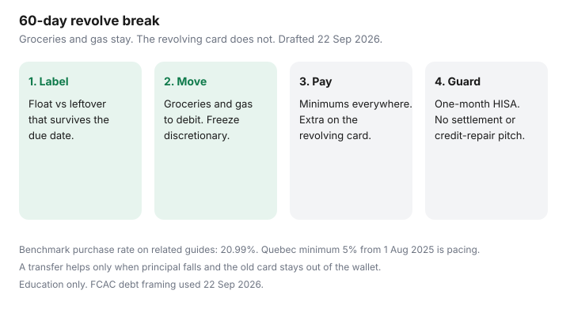

Personal Finance · Canada
How to Break the Credit Card Revolve Cycle in Canada Without Freezing Your Life
Revolving a credit card is not “using credit.” It is carrying a purchase balance past the statement due date while interest compounds at a purchase rate that often sits near 20.99% on the public-style benchmark used on our debt guides. The trap is swiping the same card you are trying to pay down. Every grocery top-up resets the clock on the expensive slice.
This guide is a Canadian revolve-break plan that still buys groceries and gas. It is education, not credit advice. No debt-settlement pitch, no payday loan, no credit-repair offer. FCAC’s debt pages and Canada.ca consumer credit materials were used 22 Sep 2026.
Disclosure: Banking and budgeting-tool offers are offer types only. Saving Optimizer may later add partner links. We do not currently claim bank partnerships on this page. We do not promote debt-settlement, payday, or credit-repair services. Education only — not credit advice.
Key takeaways
- Separate the statement you will clear this cycle (float) from the leftover that survives the due date (revolving debt).
- Freeze restaurants and marketplace carts; keep a written grocery and gas envelope on debit or chequing.
- Remove the revolving card from wallets while payoff runs. Keep about one month of must-pays in a HISA.
- Snowball or avalanche is fine — new purchases on the revolving card are not.
- A low-rate transfer helps only when principal falls and the old card stays closed to spending.
Separate “float” from revolving high-interest debt
A float is money you will repay in full before the due date — often the same week as payday. Revolving debt is the balance that survives the due date and starts costing purchase interest. Write two numbers on one page: (1) the statement balance you will clear this cycle, and (2) the leftover that will still be there next month. Only the second number is the revolve problem.
If you pay the statement in full every month and never carry a balance, you are not revolving. Keep using the card if the rewards and the float are honest. If any purchase balance survives, the card is a debt tool until that leftover is zero. Québec’s credit-card minimum of at least 5% of the balance from 1 August 2025 is pacing, not a strategy. Paying only the minimum on a 21% card is how a $3,000 balance becomes a multi-year project.

| Situation | What it is | Next move |
|---|---|---|
| Pay statement in full every cycle | Float, not revolving debt | Keep the card if fees and rewards still fit. |
| $2,400 leftover at 20.99% purchase | Revolving high-interest debt | Stop new purchases on that card. Attack principal after minimums elsewhere. |
| 0% transfer promo ending in 4 months | Temporary float with a cliff | Calendar the expiry. If principal will not be gone, plan the post-promo rate now. |
A spending freeze that still allows groceries and gas
A freeze that bans food fails in week one. Freeze discretionary categories: restaurants, marketplace shopping, travel holds, and “I’ll return it later” carts. Leave a written weekly envelope for groceries and fuel. Pay those from chequing or debit, not from the revolving card.
Use the same zero-based habit as the monthly budget guide: every dollar of net pay already has a job before Friday night arrives. If the grocery line is $180 a week, that number is visible. A freeze without a number is a hope.
Move essentials to debit/chequing while payoff runs
Leave the revolving card at home or remove it from phone wallets. Recurring subscriptions that still sit on the card should move to a debit-linked payment or a card you pay in full. Hydro, insurance, and childcare PADs belong on chequing so a missed card payment does not cascade into NSF theatre. Federal personal deposit accounts at regulated banks face a $10 NSF fee cap from 12 March 2026; that cap does not make a bounced PAD free of stress.
Build or keep about one month of must-pays in an unregistered HISA before you send every spare dollar at the card. The buffer rule matches the household debt payoff plan. Zero cash plus a payoff is how groceries return to the same card.
Snowball/avalanche reminder without method wars
Pay every minimum on time. Put the extra on either the highest rate (avalanche) or the smallest balance (snowball), then roll the payment. The interest gap on a labelled mix is usually smaller than the cost of quitting. Details and Québec pacing live in snowball versus avalanche. This page does not restart that debate. It only requires that the revolving card stops receiving new purchases while the chosen method runs.
When a low-rate transfer helps vs hurts
A balance transfer or a lower-rate line of credit helps only when principal falls and you do not refill the old card. FCAC’s interest-only warning, covered in line of credit versus cards, still applies. A transfer fee of 1% to 3% is a prepaid cost. If the promo lasts six months and you will clear only a third of the balance, write the post-promo rate on the calendar before you accept.
A transfer hurts when the old card goes back into the wallet “for emergencies” and the emergency is Tuesday takeout. Cut the credit limit on the paid-down card if you need a hard guardrail, or freeze it in the issuer app. Do not close every card if utilization and history still matter to you — see utilization — but do not spend on the revolving product while payoff runs.
A 60-day revolve-break plan
Days 1–3: Inventory balances, rates, due dates, and which card still gets daily spend. Move groceries and gas to debit. Remove the revolving card from digital wallets.
Days 4–14: Fund or confirm the one-month HISA buffer. Set the extra payment amount after minimums. Start the freeze categories in writing.
Days 15–45: Run the payment and the freeze. Check the statement mid-cycle so a forgotten subscription does not surprise you. If a true emergency hits, pause extras, keep minimums, use the HISA — the same rule as the household payoff guide.
Days 46–60: Compare the revolving leftover to day 1. If it did not fall, the freeze leaked or the payment was only the minimum. Fix the leak before you shop a consolidation product. Non-profit credit counselling you can verify is the hardship path FCAC describes when minimums themselves break. Settlement and credit-repair ads are outside this plan.
Sources & date stamps
- FCAC / Canada.ca — consumer credit and debt repayment framing; hardship path language (used 22 Sep 2026).
- Saving Optimizer debt guides — 20.99% purchase-rate benchmark; Québec 5% card minimum from 1 August 2025; $10 NSF cap from 12 March 2026 on personal deposit accounts at federally regulated banks.
- No debt-settlement, payday, or credit-repair product is endorsed on this page.
Frequently asked questions
Is paying the minimum each month enough to stop revolving?
No. The minimum keeps the account current. Revolving stops when purchase balances are paid before interest sticks — and when new spending on that card pauses until the leftover is gone.
Can we keep one card for points while paying another down?
Yes, if the points card is paid in full every cycle and the revolving card receives no new purchases. Two jobs, two cards. Do not put groceries back on the debt card.
Should we close the card after it hits zero?
Not required. Freezing or lowering the limit often prevents relapse while preserving history. Closing every card can raise utilization. No credit-repair product is required to read your own file.
What if we cannot make minimums?
Contact the lender about hardship and use a non-profit credit counselling agency you can verify. FCAC describes that path. Skip settlement and credit-repair ads.
Do we need a debt consolidation loan first?
Only if principal will fall at a lower rate and spending on the old card stops. A transfer that refills the card is a fee with a new logo.